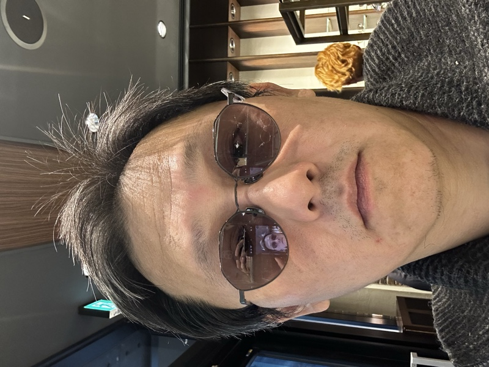

Professor · Social Policy
葉崇揚
Comparative welfare state researcher specialising in East Asian social policy, pension politics, and welfare attitudes. Faculty at Soochow University, Taiwan.

Department of Sociology
Soochow University, Taiwan
PhD · University of Southampton, UK (2014)
I am a Professor in the Department of Sociology at Soochow University, Taiwan, and a comparative welfare state researcher with a focus on East Asian social policy.
I received my PhD in Sociology and Social Policy from the University of Southampton, United Kingdom, in 2014. My doctoral dissertation, supervised by Dr. Paul Bridgen and Dr. Traute Meyer, examined the public-private pension mix in East Asia.
My main research interests centre on welfare attitudes, comparative pension policy, and East Asian welfare states. A recent project funded by the National Science and Technology Council (國家科學及技術委員會) compares pension attitudes and how pension politics is managed in Japan, Korea, and Taiwan.
My research draws on welfare regime theory, power resources theory, and comparative historical analysis, employing both quantitative and qualitative methods. I have published in outlets including Ageing & Society, Journal of Asian Public Policy, and leading TSSCI-indexed journals in Taiwan.
A selection of academic outputs across journals, books, chapters, and conference proceedings. Click through for the full list.
打造福利市場：比較東亞福利國家
Building the Welfare Market: A Comparative Study of East Asian Welfare States
NSTC 114-2410-H-031-090 · National Science and Technology Council (NSTC)
比較東亞福利國家的年金市場化和金融化和管制型福利國家的興起
112-2410-H-031-039-MY2 · National Science and Technology Council (NSTC)
Shaping and Managing Pension Politics: East Asian Welfare States in International Comparison
（形塑與管理年金政治：國際比較下的東亞福利國家）
MOST 110-2410-H-031-052-MY2 · Ministry of Science and Technology
女性勞動參與率與家庭政策：社會投資的觀點
MOST 109-2410-H-194-024 · Ministry of Science and Technology (Co-PI)
從消極保障到積極促進的微觀基礎：東亞福利國家的比較分析
MOST 108-2410-H-031-069-MY2 · Ministry of Science and Technology
從生產主義到社會投資：東亞福利國家轉型的比較政治經濟學
MOST 107-2410-H-031-065 · Ministry of Science and Technology
東亞觀察最前線 ・ East Asia Frontline ── A column observing the shifting under-currents of Japan, Korea, Taiwan, and China, drawing on manga, popular culture, and social data. A lighter but serious counterpart to the academic writing. Articles in Traditional Chinese for now; English versions to follow.
While Shohei Ohtani writes a script even Major League never imagined, another figure shaped by manga is steadily reaching Japan's political summit. This essay reads Sanae Takaichi through the lens of two long-running series — Hirokane Kenshi's Kaji Ryūsuke no Gi for the method, and the Shima Kōsaku arc for the anxiety — to understand the "absolute realism" she represents.
Read in Chinese → View all articles →I welcome inquiries from researchers, students, and collaborators interested in comparative welfare state research, East Asian social policy, and pension politics.
Find me online
社會政策，從搖籃到墳墓，與我們人的一生息息相關。